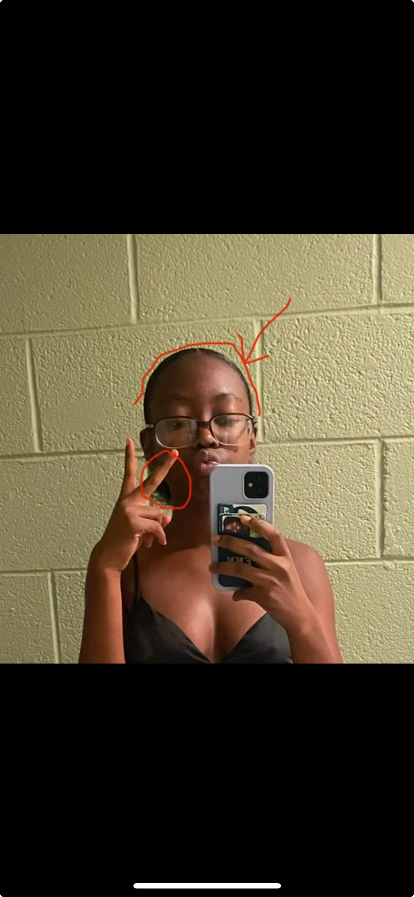
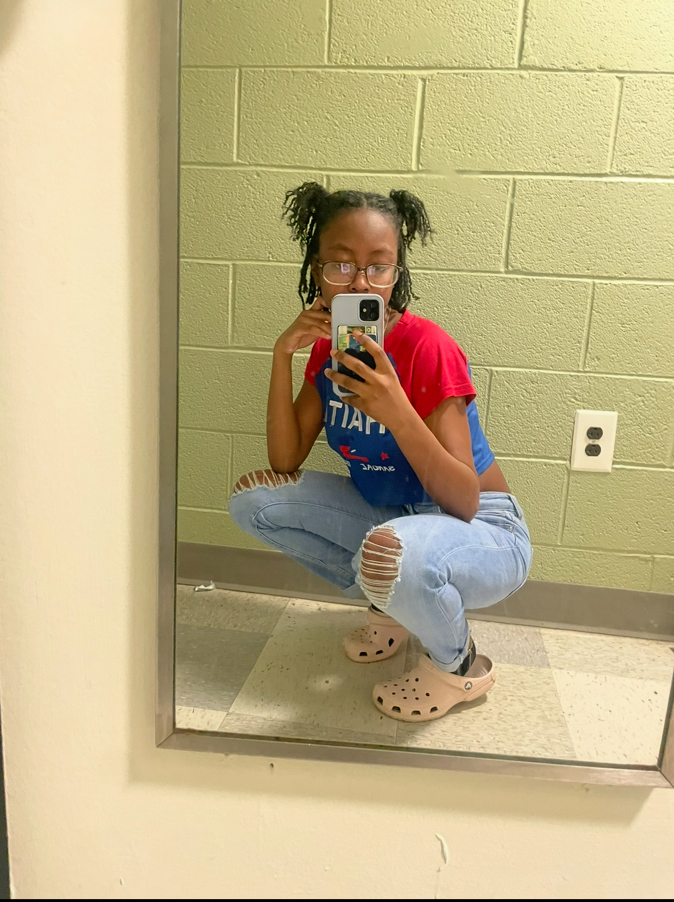
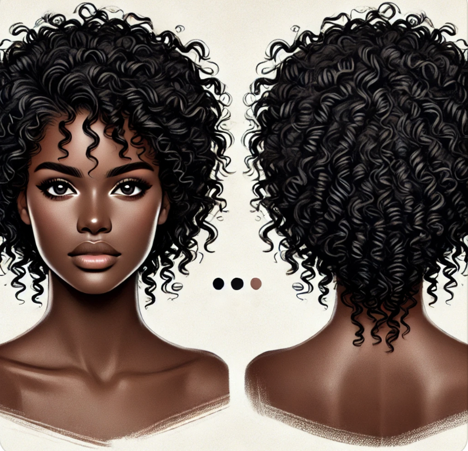

My experience with bias in AI
Testing ChatGPT’s Familiarity with Afrocentric Features

As a person of color who has very textured hair, I found it difficult growing up finding accurate and helpful resources that would help me manage, take care of, and discover useful information regarding my hair type. However, an overwhelming majority of results that appeared represented a way looser hair texture, particularly straight hair. I struggled to easily be able to find people that looked like me in the results.
Now in 2025, when I use the same “easy hairstyles to try” search, there are actually some results that include Black people and a couple that have my hair texture. Despite some progress, it still took a good amount of time to even get to this point.

Within AI, we know that models are trained to recognize patterns and to predict and complete them. With the issues I have described I was curious as to its experience with recognizing my hair type despite, my hair texture’s history with a lack of representation.
As someone who does their own hair, I generally question what the back of my head looks like. I usually see the front or the side of my head from time to time. So I questioned whether AI could properly determine what it thinks the back of my head looks like considering the hair texture that I have.
I gave ChatGPT a prompt to determine this question:

I gave it this image to start:
The clues I gave it are highlighted in this image:

I wanted to test how ChatGPT would produce an image based on minimal clues regarding my hairstyle, to see how it would predict what the back of what my head looked like. This photo shows the top of my hairstyle, so that I could guide Chat in the right direction so it doesn’t assume I’m bald or something. It also shows some hair near my ear, so that it sees that my hair is textured and not straight.
Results & Discussion
It actually gets the hairstyle I am truly wearing here pretty close despite not having a lot of clues, but it gets my hair texture completely off. It predicts my hair being completely straight when my hair is the complete opposite.
Since AI is trained to recognize and complete patterns CHAT probably determined that the hair on the top of my head is extremely straight which it does appear because of how slick it is. I’ve concluded that it fails to realize a slick back can be done on any hair texture, and it mistakenly ruled out the possibility that hairstyle with this characteristic can have a variety of input, not just straight hair.
Second Attempt
In this attempt I tried a new image with hair that was more detactable. And this was the result:

Results & Discussion
I didn’t know what to expect, but it seems as though ChatGPT exaggerated the input I gave it. It appears to get the framing/shape of what the back of my head could look like. I also see that it continues where it would think my middle part would be like from the back. That detail is interesting. Despite this, it still gave me straightish/wavy-ish hair, not really a good match for the frontal view of my hair at all. It’s less defined and has A LOT more volume than what I gave it. I think the image it generated is flattering and pretty as well but it just doesn’t represent or complete what I look like though. It also misses other details to my hair as well. In the image that is generated, the two hair pieces in the front are in a bun-like shape, but in the image I gave it, I don’t have buns in addition to them also being composed of twists.
I believe that it misses the detail in the style of my hair because the “pixels” that are used to train this model to recognize patterns in an image are not as defined so the model views the pieces of hair as strands instead of other things it could’ve been–like braids or dreads–from that distance. Though I am curious as to why it gave me buns, despite there having been good definition to see that that just wasn’t the style in the picture I gave it. I am also wondering why it gave me so much more volume as well.
Final Attempt
I figured CHAT has struggle determining my hair texture because it’s struggling to view definition. I passed it this image next:

And it generated this:

To be honest this might be the best attempt at generating what the heck could be happening in the back of my head. It’s the closest out of all the pictures to my hair type and what a style I did would look like from the back. But it still gets the shape off a little bit and is still a looser hair pattern than my texture.
Overall Assessment of Chat’s Familiarity with Type 4 Hair
From trying to work with ChatGPT to generate a possibility for what my hair type could look like from the back, I figure that ChatGPT has an easier time doing so, when it has a lot more clues and when it’s from a closer viewpoint. But it still has a hard time generating an image matching a kinky hair type. It will need more development to accommodate and understand patterns regarding really textured hair types.